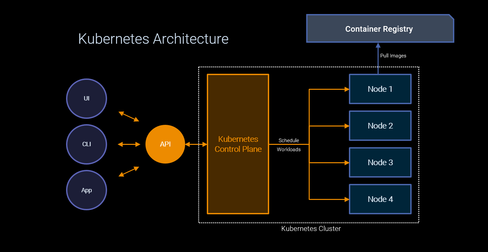

Kubernetes
Introduction
Kubernetes is a portable, extensible, open-source platform for managing containerized workloads and services, that facilitates both declarative configuration and automation.
It has a large, rapidly growing ecosystem. The name Kubernetes originates from Greek, meaning helmsman or pilot. Google open-sourced the Kubernetes project in 2014.
Kubernetes builds upon a decade and a half of experience that Google has with running production workloads at scale, combined with best-of-breed ideas and practices from the community.

Kubernetes Cluster
In Kubernetes, a cluster consists of at least one Kubernetes control plane and multiple Kubernetes worker machines called Nodes.
A cluster is the foundation of Kubernetes: all containerized workloads and services run within a cluster.
Kubernetes Control Plane
The Kubernetes control plane is responsible for maintaining the desired state for your cluster.
When you interact with Kubernetes, such as by using the kubectl command-line interface, you’re communicating with your cluster’s Kubernetes control plane.
The “control plane” refers to a collection of processes managing the cluster state.
Typically all these processes run on a single node in the cluster, and this node is also referred to as the control plane.
The control plane can also be replicated for availability and redundancy.
Kubernetes Nodes
The nodes in a cluster are the machines (VMs, physical servers, etc) that run your applications and containerized workflows.
The Kubernetes control plane controls each node; you’ll rarely interact with nodes directly.
Container Registry
A Container Registry is a single access point to manage Container Images.
Container Images are stored with rich metadata that allows images to be searched, viewed and retrieved for deployment to Container Platforms such as Kubernetes.
Namespace
Namespaces are intended for use in environments with many users spread across multiple teams, or projects.
Namespaces are a way to divide cluster resources between multiple users. In GKP, namespaces are segmented by SEAL applications and deployments (a single SEAL application can have multiple deployments).